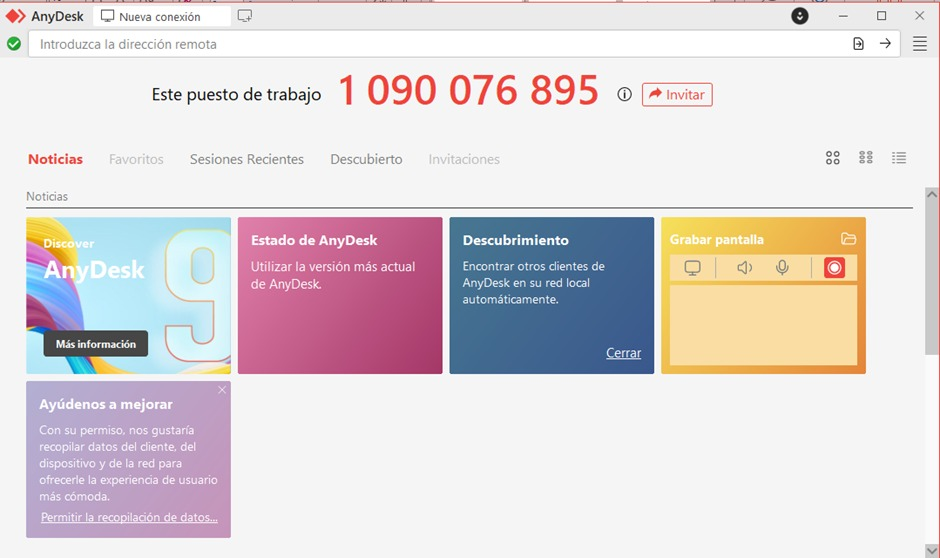

⚠️ IMPORTANTE - Lee esto primero
NO desconectes cables
Usa AnyDesk para conectar tu laptop
NO muevas la cámara
Está calibrada para la sala
NO comas ni bebas
Cerca del equipo
📦 ¿Qué es cada cosa?

4 Monitores (TVs)
Donde ves la reunión
.jpeg)
Mac Mini
La computadora principal
Cámara Kandao
Cámara + Micrófono + Altavoz

Mouse y Teclado
Para controlar la Mac
🔌 Cómo Encender el Equipo
Enciende los Monitores
.jpeg)
- Usa el control remoto blanco (Chromecast)
- Verifica que esté en entrada HDMI 1
Enciende la Mac Mini

- Busca la Mac Mini detrás de los monitores
- Presiona el botón circular en la esquina posterior derecha
Verifica la Cámara Kandao
- Debe tener una LUZ VERDE encendida
- Si no está encendida, presiona el botón en su base
Inicia Sesión

Contraseña:
(También está pegada en el teclado)
📹 Iniciar Videoconferencia (Teams/Zoom)
Abre Teams o Zoom
Haz doble clic en el ícono de Teams o Zoom en la barra inferior (Dock)
Únete a tu Reunión
Ingresa con el ID de reunión o desde tu calendario
🔴 CRÍTICO: Verifica los Dispositivos

ANTES de entrar a la reunión, verifica que esté seleccionado:
Kandao Meeting S
Kandao Meeting S
Kandao Meeting S
💻 Proyectar tu Laptop (Sin Cables)
Usa AnyDesk para mostrar tu pantalla en los monitores
1. Abre AnyDesk
Anota el número que aparece
Ejemplo: 123 456 789
2. Conecta desde la Mac
- Abre AnyDesk en la Mac
- Escribe el número de tu laptop
- Haz clic en "Conectar"
3. Acepta la Conexión
Aparecerá una ventana pidiendo permiso
✅ ¡Listo! Tu pantalla se verá en los monitores
🆘 ¿Tienes Problemas?
💡 Regla de Oro
Si algo no funciona, REINICIA la Mac Mini
🍎 Menú Apple (esquina superior izquierda) → Reiniciar
No veo nada en el TV
Solución:
- Enciende el TV con el control
- Presiona "Input" y selecciona HDMI 1
No me escuchan
Solución:
- Revisa que no esté en MUTE (Teams/Zoom)
- Revisa la cámara Kandao (luz roja = mute)
No escucho la reunión
Solución:
- Verifica que Altavoces = Kandao Meeting S
- Sube el volumen con las teclas de la Mac
Mouse/Teclado no funciona
Solución:
- Apaga y enciende el dispositivo
- Si no funciona, llama a Sistemas
AnyDesk no conecta
Solución:
- Verifica WiFi (icono arriba a la derecha)
- Si no hay WiFi, reinicia la Mac
⏻ Al Terminar: Apaga el Equipo
Cierra todas las apps (Teams, Zoom, AnyDesk)
🍎 Menú Apple → Apagar...
Apaga los TVs con el control remoto
📞 ¿Aún necesitas ayuda?
Contacta al equipo de Sistemas
🕐 Horario
Lunes a Viernes
8:00 - 17:00